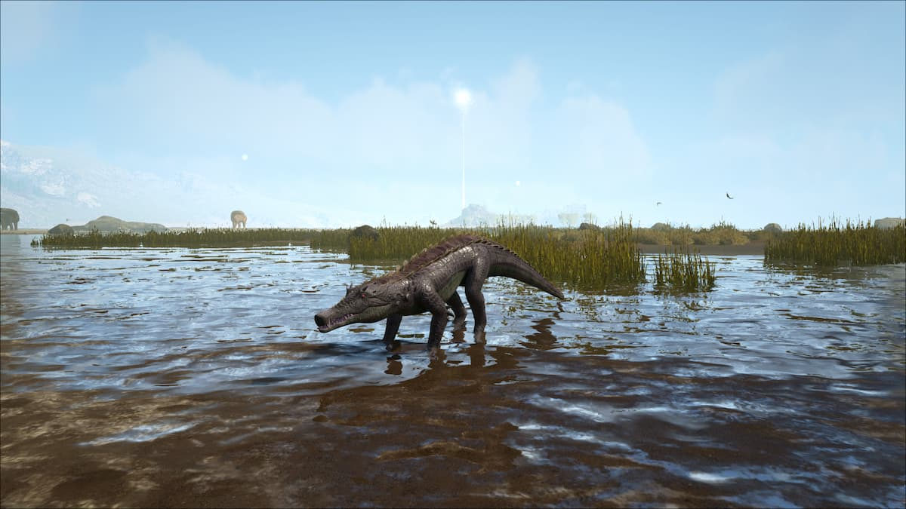
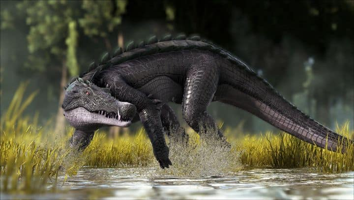
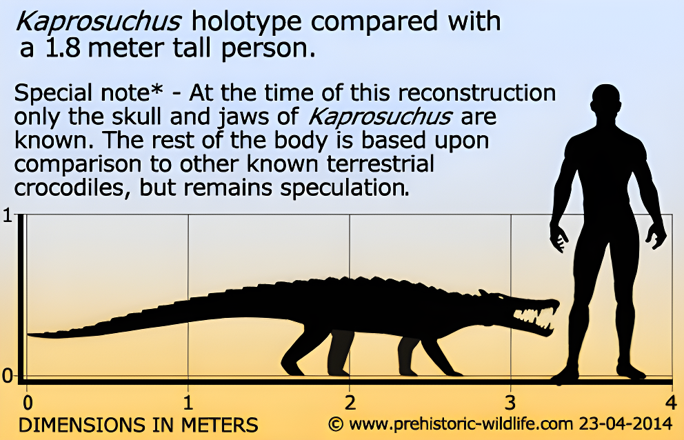
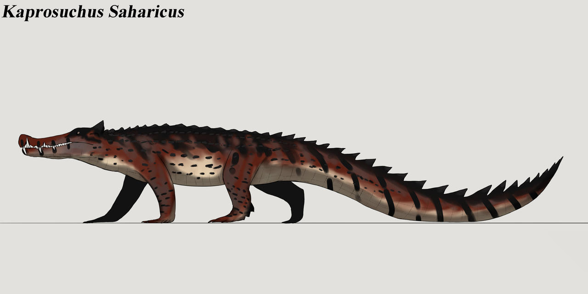
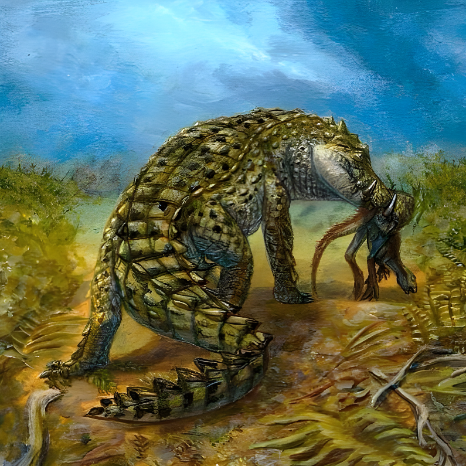
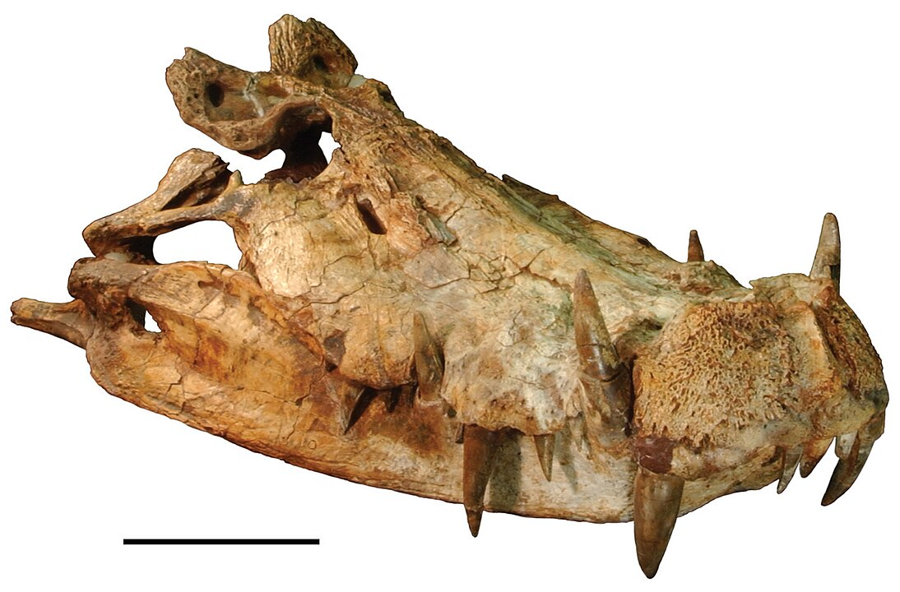

Kaprosuchus
Cá Sấu Lợn Rừng Phấn trắng
Tổng quan
Kỷ
Cretaceous
Họ
Mahajangasuchidae
Chi
Kaprosuchus
Dài
3.3 m
Thức ăn


Kaprosuchus là một chi Mahajangasuchid Crocodyliform đã tuyệt chủng. Nó được biết đến từ một hộp sọ gần như hoàn chỉnh duy nhất được thu thập từ Hệ tầng Echkar trên kỷ Phấn trắng của Niger.
Nguồn: wikipedia.org
Phân bố
Khu vực miền Bắc Châu Phi
Thông tin thêm về Kaprosuchus
Kỷ nguyên và phân bố
Kaprosuchus là một loài cá sấu sống vào giai đoạn Cenomanian khoảng 95 triệu năm trước vào cuối kỷ Phấn trắng, tại khu vực ngày nay là Châu Phi, Niger, Hệ tầng Echkar. Loài này thích nghi tốt ở cả dưới nước và trên cạn, chúng từng sống gần nguồn nước là chủ yếu hay sống ẩn dật trong các vùng đầm lầy như cá sấu hiện đại ngày nay.
Tên khoa học
Cái tên Kaprosuchus có nghĩa là "cá sấu lợn rừng" từ tiếng Hy Lạp κάπρος , kapros ("lợn rừng") và σοῦχος , soukhos ("cá sấu") liên quan đến những chiếc răng nanh lớn bất thường của nó giống răng lợn rừng. Nó được đặt biệt danh là "BoarCroc" bởi Paul Sereno và Hans Larsson, người đầu tiên mô tả chi này trong một chuyên khảo ZooKeys xuất bản vào năm 2009 cùng với các loài cá sấu sa mạc Sahara khác như Anatosuchus và Laganosuchus.
Kích thước
Kaprosuchus được biết đến nhờ hộp sọ gần như hoàn chỉnh dài 507 mm, trong đó hàm dưới dài 603 mm. Mô tả ban đầu ước tính chiều dài toàn bộ con vật là 6 mét (19,7 ft), so sánh sau này với những con cá sấu tương tự cho thấy tổng chiều dài cơ thể ước tính còn khoảng 3,3 đến 4 mét.
Ngoại hình
Kaprosuchus sở hữu ba bộ răng nanh giống như ngà của lợn rừng nhô ra trên và dưới hộp sọ, một trong số đó ở hàm dưới khớp với các rãnh ở hàm trên. Loại răng này không được thấy ở bất kỳ dạng cá sấu nào khác đã biết khiến nó có biệt danh là “Cá sấu heo rừng”.
Một đặc điểm độc đáo khác của Kaprosuchus là sự hiện diện của những chiếc sừng lớn, hình bầu dục được hình thành từ xương vảy và xương đỉnh.dự án đó sau từ hộp sọ. Các phép chiếu nhỏ hơn cũng được thấy trong Mahajangasuchus có liên quan chặt chẽ.
Chế độ ăn và săn mồi
Kaprosuchus từng được cho là loài săn mồi chủ yếu nếu không muốn nói là độc quyền trên cạn. Nó có một cái mõm giống như ống thở để thở khi ở dưới nước và đôi mắt hướng về phía trước để quan sát con mồi qua sóng âm thanh trên đất liền. Các lỗ mũi bên ngoài hình ống lồng, nằm ở mặt lưng được coi là lớp bảo vệ chống lại tác động nếu con vật húc con mồi bằng chiếc mõm chắc khỏe của nó.
Với bản năng di chuyển nhanh, thậm chí còn nhanh hơn trong nước, chúng là một tay thợ săn đơn độc chuyên săn lùng những loài khủng long có kích thước vừa và nhỏ, đặc biệt là những cá thể bị cô lập khỏi bầy đàn. Chúng sẽ lao vào con mồi, làm choáng váng hoặc kẹp chặt bằng hàm và răng hạ gục con mồi trong khoảng thời gian ngắn.
Khám phá
Kaprosuchus được phát hiện và miêu tả chính thức vào năm 2010 bởi một nhóm các nhà khảo cổ học từ Pháp và Morocco. Vào thời điểm mô tả của Kaprosuchus, Sereno và Larrson coi Mahajangasuchids là một họ của cá sấu Neosuchian. Tuy nhiên, các nghiên cứu sâu hơn về mối quan hệ của họ này đã nhiều lần phát hiện ra rằng chúng tạo thành một nhánh chị em với Peirosaurids, tạo thành một nhánh lần lượt nhóm lại với các loài Uruguaysuchids như Anatosuchus và Araripesuchus như một nhánh phân kỳ sớm của Notosuchian.
